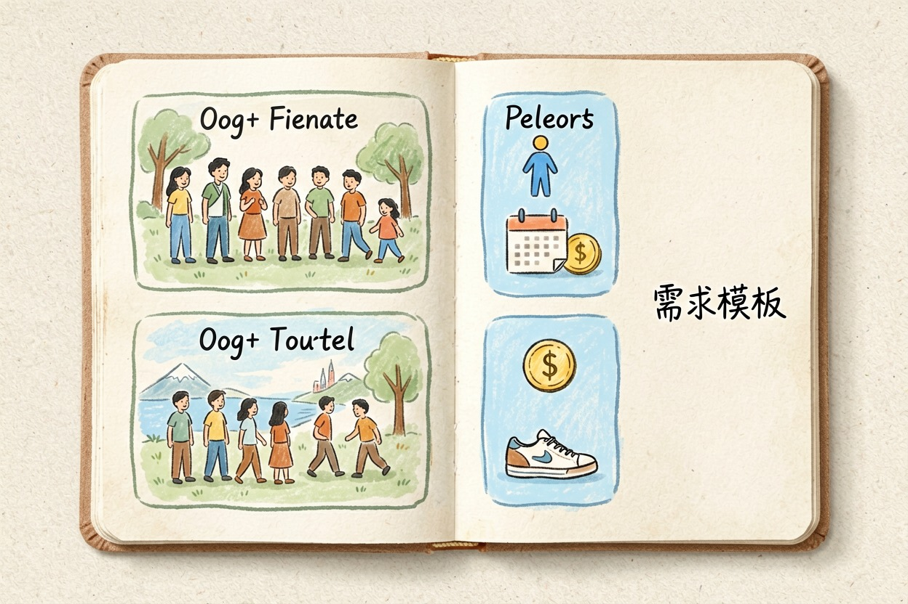
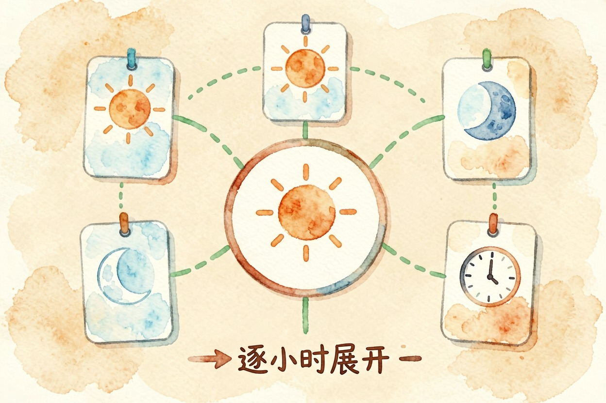
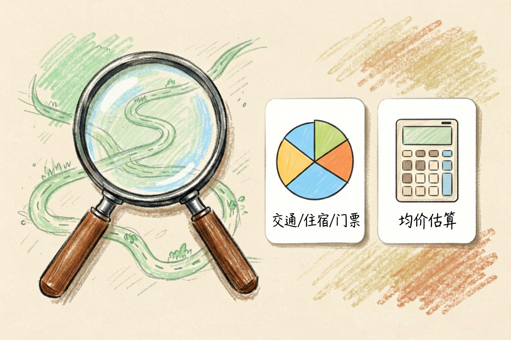
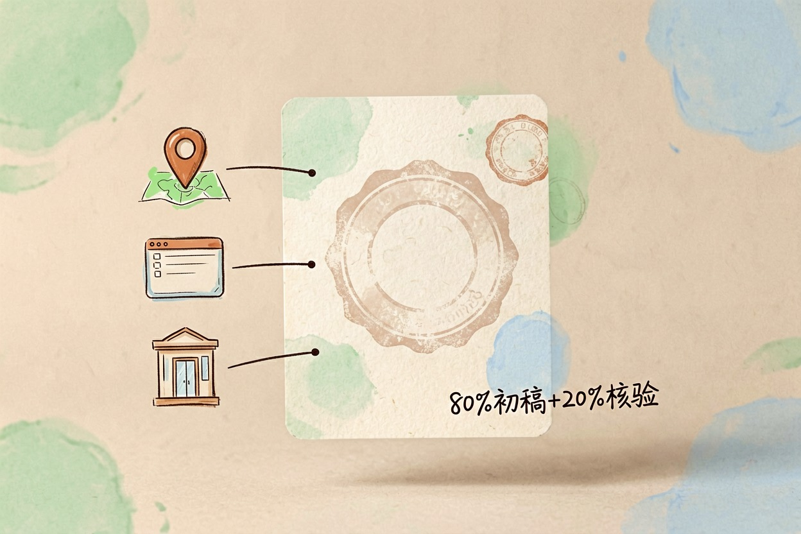
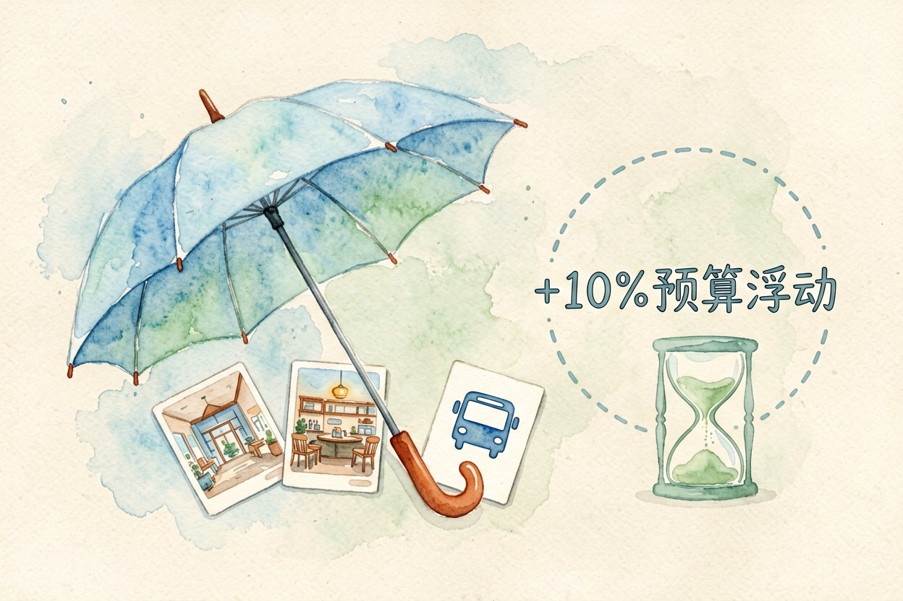

用 AI 做旅行攻略：行程和预算
旅行攻略别只丢一句话给 AI。把需求填全，先要框架再细化，最后按官方信息核对行程。
AI 做旅行攻略，关键是把需求一次填全，再让 AI 先出框架、后逐天细化，这样能得到八成可用的初稿。但有个真相必须先说：AI 会编造餐厅和路线。出发前，务必用官方渠道核验一遍。
这篇按「填需求—要框架—逐天细化—自查预算—官方核验」的顺序讲 AI 做旅行攻略，每步都给你可复制的提示词。第一次用，照着抄就能上手；用熟了，再按自己的习惯改。
第一步：用 AI 做旅行攻略前，先把需求填全

AI 做旅行攻略最常踩的坑，是只丢一句「帮我做个五天四夜的攻略」。AI 不知道你们几个人、预算多少、爱走路还是爱发呆，只能回一套模板答案。它越泛，你越没法用。第一件事，是把需求写满。
下面这份模板，把人群、天数、预算、节奏、偏好、输出格式一次填全：
我计划去【目的地】旅行。
出行人群：【比如一家三口，孩子 8 岁】。
天数：【5 天 4 夜】，总预算：【8000 元】。
节奏偏好：【每天不超过 2 个景点，喜欢自然风光，不爱排队】。
特殊需求：【老人同行，尽量少爬楼；对海鲜过敏】。
请先给出行程框架：每天住哪个区域、哪几个核心景点，再列交通方式。
最后按交通、住宿、门票、餐饮四类拆分预算，输出为表格。第二步：先要框架，再逐天细化

拿到框架后，别急着让它排满。AI 做旅行攻略的正确顺序，是让 AI 先出城市顺序、每日主题和住宿区域，你确认大方向没问题，再让它展开到每一小时。这样改起来快，不会推倒重来。
框架我确认了，请把第 2 天展开成逐小时行程。
要求：上午、下午、晚上各写清地点、交通和大概停留时间；
同一天内两处车程超过 40 分钟的安排，要单独标出来。第三步：让 AI 自查路线，再帮你算预算

AI 排的路线常绕路，或上午和下午两个点相距太远。让 AI 做旅行攻略时，多给一句「交叉验证」指令，让它自己挑毛病：
请检查上面这份行程：1) 有没有绕路或折返；
2) 有没有一天内安排过满的；3) 景点之间车程有没有明显超标。
发现问题直接改，别问我。改完按交通/住宿/门票/餐饮四类
给出预算明细和总价。预算有个原则：AI 做旅行攻略算预算，只能按均价估，写死价格会过期。交通以12306 官网{:target="_blank"}车次和票价为准，门票、酒店以官方渠道当前说明为准。
第四步：为什么必须人工核验

AI 会编造餐厅、编造路线，这不是吓唬人。餐厅可能已停业，营业时间会变，连某条观光巴士是否运营都可能出错。AI 做旅行攻略只能当 80% 初稿，剩下 20% 靠你核对。
出发前用官方渠道过一遍：车次查 12306，景区开放时间查景区官网，路线用地图 App 导航验证。订酒店前，去酒店官网或平台核对地址和联系方式，别只信 AI 给的电话。
任何「AI 一键订票」「内部价代订」都要警惕。AI 只做规划，不替你下单，订票订房一律走官方渠道。
第五步：雨天备选和突发预案

攻略再完美，也可能下雨、堵车、临时闭馆。让 AI 做旅行攻略时，顺便要一套备选：
为这份行程准备雨天备选：室内项目 3 个、交通绕行方案 2 个、
每站附近的吃饭替代。预算浮动 10% 以内。别全信 AI 的餐厅和路线，也别让行程排得太满。留出缓冲时间，旅行才不累。一天的行程，宁可少排一个点，也别赶着打卡。想给行程做汇报展示，可以看AI 生成 PPT 工具对比；出行沟通、订房确认信，看用 AI 写邮件；提示词的基础写法在AI 提示词怎么写，更多工具去AI 工具导航里挑。
AI 做旅行攻略，核心是「填全需求、先框架后细化、官方核验」三步。别把 AI 给的行程当最终答案，它只是你的初稿。真正能用的 AI 做旅行攻略，是你核对之后的那一版。
本文信息核对于 2026-08-06。AI 产品的价格、免费额度与功能变动频繁，实际以各工具官网当前说明为准。